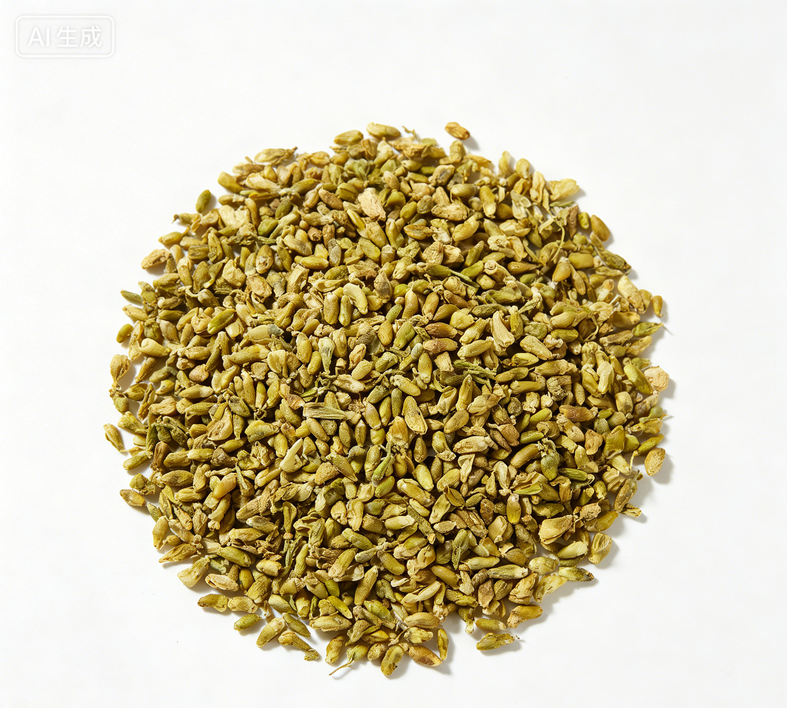

📋 基本信息
中文名槐米
拉丁名Sophora japonica L.
英文名Flos Sophorae Immaturus
产地科：豆科（Fabaceae/Leguminosae，蝶形花亚科）；属：槐属（Sophora，现或分立为Styphnolobium）；拉丁学名：Sophora japonica L.。全国各地多有栽培，主产于河北、山东、河南、山西、陕西、江苏、辽宁等地，以华北平原栽培最盛。
性状槐花 皱缩而卷曲，花瓣多散落。完整者花萼钟状，黄绿色，先端5浅裂；花瓣5，黄色或黄白色，1片较大，近圆形，先端微凹，其余4片长圆形。雄蕊10，其中9个基部连合，花丝细长。雌蕊圆柱形，弯曲。体轻。气微，味微苦。
槐米 呈卵形或椭圆形，长2～6mm，直径约2mm。花萼下部有数条纵纹，萼的上方为黄白色未开放的花瓣。花梗细小。体轻，质松脆，手捻即碎。气微，味微苦涩。【《中国药典》2020年版一部】
用法用量5～10g。【《中国药典》2020年版一部】
贮藏置干燥处，防潮，防蛀。【《中国药典》2020年版一部】
☯ 传统属性
四气寒
五味苦
归经肝、大肠经
功能主治凉血止血，清肝泻火。用于便血，痔血，血痢，崩漏，吐血，衄血，肝热目赤，头痛眩晕。【《中国药典》2020年版一部】
禁忌症脾胃虚寒及阴虚发热而无实火者慎用。【《中药学》教材/《中药大辞典》】
毒性常规用量（5～10g）安全性较好。过量或长期服用可因苦寒伤胃引起恶心、胃部不适、腹泻；芦丁大剂量摄入偶见胃肠道反应及过敏（皮疹）报道。槐花偶致光敏性皮炎的个案报道（鲜品接触后日晒）。脾虚便溏者服用可加重腹泻。
适宜体质阴虚质、湿热质
适宜证型阴虚证、肺阴虚证、胃阴虚证、热证
🔬 现代研究
主要成分槐米为天然植物中芦丁含量最高的资源之一，主要含黄酮类成分：芦丁（芸香苷，含量可达15%～20%以上，药典指标成分）、槲皮素、异鼠李素、山柰酚及其苷类（如槐花米甲素）；另含三萜皂苷类（槐花米乙素、槐花米丙素等）、白桦脂醇、槐二醇等三萜类，以及鞣质、多糖、氨基酸和多种微量元素。芦丁水解可得槲皮素，为提取芦丁和槲皮素的主要工业原料。
药理作用现代研究表明：①芦丁（维生素P）能维持毛细血管正常抵抗力、降低血管通透性和脆性，具止血、防治毛细血管出血的作用，其衍生物曲克芦丁用于血栓性静脉炎等；②抗炎、抗过敏：抑制炎症介质释放，减轻渗出水肿；③抗氧化、清除自由基，保护血管内皮细胞；④降血脂、抗动脉粥样硬化：芦丁、槲皮素可调节血脂代谢；⑤降血压、扩张冠状动脉，改善心肌供血；⑥抗菌、抗病毒；⑦槲皮素尚报道有抗肿瘤、降血糖等作用。
食疗功效传统食疗认为槐米（花）能凉血止血、清肝明目、泻火降压。民间常用槐米茶辅助调理高血压、肝火上炎之头痛目赤；槐花粥、槐米藕节饮用于便血、痔血；炒槐米泡水用于血痢、崩漏。其清热凉血作用平和，为夏季常用的清凉降火食疗品。
食养禁忌
🏭 产品形态与潜在功能
推荐形态
代茶饮提取物袋泡茶
潜在功能